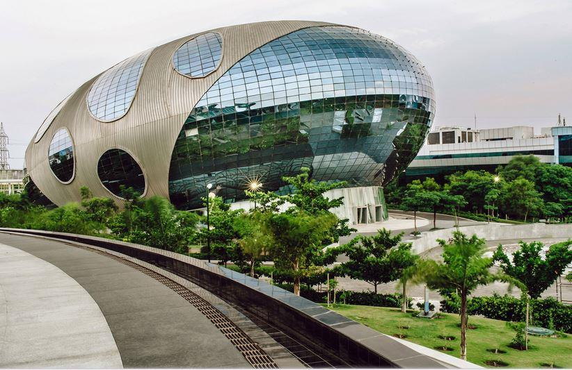

INDIA
India (Hindi: Bhārat), officially the Republic of India (Hindi: Bhārat Gaṇarājya),is a country
in South Asia. It is the second-most populous country, the seventh-largest country by land area, and
the most populous democracy in the world. Bounded by the Indian Ocean on the south, the Arabian Sea
on the southwest, and the Bay of Bengal on the southeast, it shares land borders with Pakistan to
the northwest; China, Nepal, and Bhutan to the north; and Bangladesh and Myanmar to the east.
In the Indian Ocean, India is in the vicinity of Sri Lanka and the Maldives; its Andaman and Nicobar
Islands share a maritime border with Thailand, Myanmar and Indonesia.
India has been a federal republic since 1950, governed in a democratic parliamentary system. It is a
pluralistic, multilingual and multi-ethnic society. India's population grew from 361 million in 1951
to 1.211 billion in 2011.During the same time, its nominal per capita income increased from
US$64 annually to US$1,498, and its literacy rate from 16.6% to 74%. From being a comparatively
destitute country in 1951,[51] India has become a fast-growing major economy and a hub for
information technology services, with an expanding middle class.It has a space programme which
includes several planned or completed extraterrestrial missions. Indian movies, music, and spiritual
teachings play an increasing role in global culture.India has substantially reduced its rate of
poverty, though at the cost of increasing economic inequality.India is a nuclear-weapon state,
which ranks high in military expenditure. It has disputes over Kashmir with its neighbours, Pakistan
and China, unresolved since the mid-20th century.Among the socio-economic challenges India
faces are gender inequality, child malnutrition,and rising levels of air pollution.[57] India's
land is megadiverse, with four biodiversity hotspots.Its forest cover comprises 21.4% of its
area.India's wildlife, which has traditionally been viewed with tolerance in India's
culture,is supported among these forests, and elsewhere, in protected habitats.
HISTORY
By 55,000 years ago, the first modern humans, or Homo sapiens, had arrived on the Indian subcontinent from Africa, where they had earlier evolved.The earliest known modern human remains in South Asia date to about 30,000 years ago.After 6500 BCE, evidence for domestication of food crops and animals, construction of permanent structures, and storage of agricultural surplus appeared in Mehrgarh and other sites in what is now Balochistan, Pakistan.These gradually developed into the Indus Valley Civilisation,the first urban culture in South Asia, which flourished during 2500–1900 BCE in what is now Pakistan and western India.Centred around cities such as Mohenjo-daro, Harappa, Dholavira, and Kalibangan, and relying on varied forms of subsistence, the civilisation engaged robustly in crafts production and wide-ranging trade.
MODERN
Historians consider India's modern age to have begun sometime between 1848 and 1885. The appointment in 1848 of Lord Dalhousie as Governor General of the East India Company set the stage for changes essential to a modern state. These included the consolidation and demarcation of sovereignty, the surveillance of the population, and the education of citizens. Technological changes—among them, railways, canals, and the telegraph—were introduced not long after their introduction in Europe.However, disaffection with the company also grew during this time and set off the Indian Rebellion of 1857. Fed by diverse resentments and perceptions, including invasive British-style social reforms, harsh land taxes, and summary treatment of some rich landowners and princes, the rebellion rocked many regions of northern and central India and shook the foundations of Company rule.Although the rebellion was suppressed by 1858, it led to the dissolution of the East India Company and the direct administration of India by the British government. Proclaiming a unitary state and a gradual but limited British-style parliamentary system, the new rulers also protected princes and landed gentry as a feudal safeguard against future unrest.In the decades following, public life gradually emerged all over India, leading eventually to the founding of the Indian National Congress in 1885.
GEOGRAPHY
India accounts for the bulk of the Indian subcontinent, lying atop the Indian tectonic plate, a part of the Indo-Australian Plate.India's defining geological processes began 75 million years ago when the Indian Plate, then part of the southern supercontinent Gondwana, began a north-eastward drift caused by seafloor spreading to its south-west, and later, south and south-east. Simultaneously, the vast Tethyan oceanic crust, to its northeast, began to subduct under the Eurasian Plate.These dual processes, driven by convection in the Earth's mantle, both created the Indian Ocean and caused the Indian continental crust eventually to under-thrust Eurasia and to uplift the Himalayas.Immediately south of the emerging Himalayas, plate movement created a vast trough that rapidly filled with river-borne sediment and now constitutes the Indo-Gangetic Plain.Cut off from the plain by the ancient Aravalli Range lies the Thar Desert.
BIO-DIVERSITY
India is a megadiverse country, a term employed for 17 countries which display high biological diversity and contain many species exclusively indigenous, or endemic, to them.[184] India is a habitat for 8.6% of all mammal species, 13.7% of bird species, 7.9% of reptile species, 6% of amphibian species, 12.2% of fish species, and 6.0% of all flowering plant species.[185][186] Fully a third of Indian plant species are endemic.[187] India also contains four of the world's 34 biodiversity hotspots,[59] or regions that display significant habitat loss in the presence of high endemism.
POLITICS
India is the world's most populous democracy.A parliamentary republic with a multi-party system,it has eight recognised national parties, including the Indian National Congress and the Bharatiya Janata Party (BJP), and more than 40 regional parties.The Congress is considered centre-left in Indian political culture,and the BJP right-wing.For most of the period between 1950—when India first became a republic—and the late 1980s, the Congress held a majority in the parliament. Since then, however, it has increasingly shared the political stage with the BJP,as well as with powerful regional parties which have often forced the creation of multi-party coalition governments at the centre.
ECONOMY
According to the International Monetary Fund (IMF), the Indian economy in 2019 was nominally worth $2.9 trillion; it is the fifth-largest economy by market exchange rates, and is around $11 trillion, the third-largest by purchasing power parity (PPP).With its average annual GDP growth rate of 5.8% over the past two decades, and reaching 6.1% during 2011–2012,India is one of the world's fastest-growing economies.However, the country ranks 139th in the world in nominal GDP per capita and 118th in GDP per capita at PPP.Until 1991, all Indian governments followed protectionist policies that were influenced by socialist economics. Widespread state intervention and regulation largely walled the economy off from the outside world. An acute balance of payments crisis in 1991 forced the nation to liberalise its economy;since then it has moved slowly towards a free-market system[292][293] by emphasising both foreign trade and direct investment inflows.India has been a member of WTO since 1 January 1995.
EDUCATION
In the 2011 census, about 73% of the population was literate, with 81% for men and 65% for women.
This compares to 1981 when the respective rates were 41%, 53% and 29%. In 1951 the rates were 18%,
27% and 9%. In 1921 the rates 7%, 12% and 2%. In 1891 they were 5%, 9% and 1%, According
to Latika Chaudhary, in 1911 there were under three primary schools for every ten villages.
Statistically, more caste and religious diversity reduced private spending. Primary schools taught
literacy, so local diversity limited its growth.,
Education system of India is the world's second largest higher education System.India had over
900 universities, 40,000 colleges and 1.5 million schools.In India's higher education
system, a significant number of seats are reserved under affirmative action policies for the
historically disadvantaged. In recent decades India's improved education system is often cited as
one of the main contributors to its economic development
Republic of India

FLAG
STATE EMBLEM
-
Motto:- "Satyameva Jayate" (Sanskrit)
"Truth Alone Triumphs"
-
Anthem: "Jana Gana Mana"
"Thou Art the Ruler of the Minds of All People"
-
Capital:- New Delhi
-
Largest city :- Mumbai (city proper)
Delhi (metropolitan area)
-
Official languages :- Hindi and English
Recognised national languages:- None
-
Religion (2011) :- 79.8% Hinduism
14.2% Islam
2.3% Christianity
1.7% Sikhism
0.7% Buddhism
0.4% Jainism
0.23% Unaffiliated
0.65% others
-
Legislature Parliament :-
• Upper house:- Rajya Sabha
• Lower house:-Lok Sabha
-
Government:-
• President:- Ram Nath Kovind
• Vice President:- Venkaiah Naidu
• Prime Minister:- Narendra Modi
• Chief Justice:- N.V. Ramana
• Lok Sabha Speaker:- Om Birla
-
Legislature Parliament:-
• Upper house:-Rajya Sabha
• Lower house:-Lok Sabha
-
Area:-
• Total :-3,287,263km2 (1,269,219 sq mi)
• Water (%):- 9.6
-
Population:-
• 2018 estimate:-1,352,642,280
• 2011 census:-1,210,854,977
• Density:- 410.7/km2 (1,063.7/sq mi)
-
GDP (nominal)
2021 estimate
• Total:- $3.050 trillion
• Per capita:- $2,191
-
Currency:- Indian rupee (₹) (INR)
-
Time zone :-UTC+05:30 (IST)
Date format:- dd-mm-yyyy
-
Mains electricity:- 230 V–50 Hz
-
Driving side:- left
-
Calling code:- +91
Internet TLD:- .in
Auroville
Infosys,Pune

Cybertecture Egg
Chole Bhature

Chicken Makhani

Mater Paneer